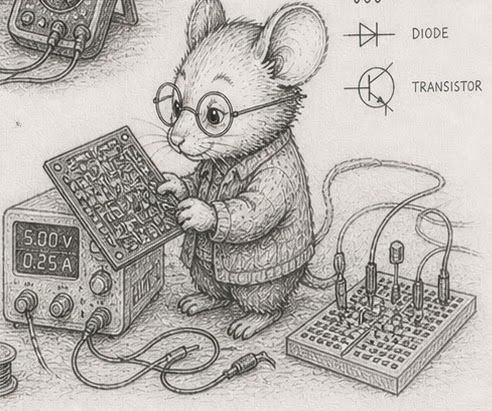

38 — Storage systems: bandwidth and IOPS
Concept node: see the DAG and glossary entry 38.
A storage system is the part of the program that crosses the boundary into something that holds bytes for longer than RAM does. Disk, network, distributed file system, message queue, message broker — all are storage systems. They differ in technology; they share a cost model.
The cost has two dimensions.
Bandwidth — bytes per second. How fast bytes can move through the storage system. NVMe SSD: roughly 3-7 GB/s read, 2-5 GB/s write. SATA SSD: ~500 MB/s. Spinning HDD: 100-200 MB/s sequential. Gigabit network: 100 MB/s. 10 Gbit network: 1 GB/s. SQLite on local NVMe: 200-500 MB/s for bulk inserts.
IOPS — operations per second. How many separate read/write operations the storage system can complete per second. NVMe: 100K-1M random IOPS; sequential IOPS counts are much higher (the underlying flash can stream). SATA SSD: 50-100K IOPS. HDD: 100-200 IOPS (limited by seek time). Network connection: bounded by latency × concurrency.
A workload’s cost is bounded by both. A 1 MB sequential read on NVMe is one IOP and ~250 µs of bandwidth time. A million 1-byte random reads is a million IOPs and ~10 seconds of latency time. Same total bytes, three orders of magnitude apart.
The §22 batched-cleanup pattern at §30’s streaming scale gathers many small mutations into one large write. This converts a high-IOPS, low-bandwidth workload (1000 separate writes per tick) into a low-IOPS, bandwidth-friendly one (one batched write per tick). The pattern is the natural fit for storage systems where IOPS is the binding constraint.

Where SQL fits — and where it does not
A reasonable question after §36 and §37: if snapshots are np.savez and state changes are the simlog’s triple-store, why is this chapter about SQLite at all?
The simulator’s hot path does not go through SQL. Snapshots are typed bytes written via np.savez; logs are typed columns written via the simlog. SQL never enters those decisions. The single-writer, batched-cleanup, queue-at-the-boundary architecture is complete without it.
SQL fits at the boundary, in three specific roles:
- Queryable archive of the log. The simlog writes a triple-store. Analysts who want to ask “how many creatures ate in ticks 1000-2000?” want relational queries with indices. The simlog’s
to_sqlite()method is a post-processing export — not a hot-path write. The triple-store is the source of truth; SQLite is a queryable view of it. - External inputs and outputs at the §35 queue. Config tables, scenario definitions, prior-run results — these often live in SQL databases. Reading them is one direction of the queue; writing summaries back is the other.
- The pandas-OOM migration (§29). Not for the simulator — for the analysis workflow alongside the simulator. When pandas hits the memory wall, SQLite is the answer for the analyst’s queries against simulation outputs.
This chapter is about what any storage system at the boundary costs, with SQLite as a worked example. The numbers below would generalise to PostgreSQL, DuckDB, Parquet files, S3, anything: bandwidth, IOPS, batching. SQLite earns its place in the chapter because it ships with Python, runs without a server, and is the format most readers will reach for when the boundary needs durable queries.
The Python disk-is-slow myth, measured
Most Python programmers carry an intuition that “in-memory is fast, on-disk is slow.” For cold access this is true; the first read of a database file from cold storage is a real disk seek. For warm access — once the OS page cache has the relevant blocks — the gap is much smaller than the intuition suggests.
From code/measurement/sqlite_performance_test.py, 100,000 random point lookups against a SQLite table populated with the same data, measured on this author’s machine:
| backing | lookups/sec |
|---|---|
:memory: (RAM) | 906,488 |
| local file on NVMe SSD (warm) | 826,628 |
The on-disk version is 9% slower than the in-memory version, not 10× or 100×. Once the file is warm in the OS page cache, every “disk” read is actually a memory read; the SSD is only consulted when the kernel decides a page has aged out. The overhead is dominated by SQLite’s dispatch and result-marshalling, not by the storage medium.
Two practical consequences:
- Defaulting to
:memory:for a workload that fits in RAM is rarely the right move. The on-disk version gives you durability for ~10% of the throughput; that is almost always a good trade. - The
np.savezsnapshots from §36 inherit the same shape. Once the file is warm,np.loadof a 100 MB snapshot is a memory copy at memcpy bandwidth, not a disk seek.
Three concrete examples worth remembering
SQLite. On local NVMe, SQLite handles ~50K row inserts per second using one-by-one INSERT statements; ~500K-1M per second using prepared statements with batched transactions; ~5M per second using INSERT INTO ... SELECT FROM ... over an in-memory table. The simlog exporter at .archive/simlog/logger.py uses the last form. Same database, three orders of magnitude in throughput, depending on whether the workload pushes IOPS or bandwidth.
# anti-pattern: bad! — one INSERT per row, ~50K/sec
for row in rows:
cursor.execute("INSERT INTO t VALUES (?, ?, ?)", row)
conn.commit()
# disciplined — batched in one transaction, ~500K-1M/sec
with conn:
cursor.executemany("INSERT INTO t VALUES (?, ?, ?)", rows)
# fastest for a bulk export — INSERT-FROM-SELECT, ~5M/sec
conn.execute("INSERT INTO t SELECT * FROM source_view")
Network sockets. A round-trip to a server is bounded by latency: ~0.1 ms LAN, ~10-100 ms internet, ~1 ms data centre. Each round-trip is one IOP from the workload’s perspective. Bandwidth is not the binding constraint until the response is many KB. The §22 pattern at this scale: batch many requests into one round-trip. Python’s requests.Session keeps a TCP connection alive across calls (saving the TCP handshake, ~1-3 ms each); httpx.AsyncClient lets you fan out concurrent requests over one connection.
Distributed file systems. S3, EFS, CephFS, NFS — bandwidth scales with concurrency (many parallel reads from many objects = high aggregate bandwidth) but per-object IOPS is low (one operation per request). Workloads that want sequential bandwidth fan out across many objects; workloads that want low latency on small reads do not fit this storage system. A loop that calls s3.get_object(...) per row is an anti-pattern at any scale.
The lesson, in numbers
When adding a storage system to the simulator, measure both bandwidth and IOPS of your workload — not just the system’s spec sheet. A 7 GB/s NVMe drive limited to 100K IOPS is bottlenecked at ~30 KB per IOP for random workloads. Below that block size, IOPS bind.
The §4 budget framing applies here too. A 30 Hz tick has 33 ms of budget. A 100 µs disk read costs 0.3% of the budget. Ten of them cost 3%. A hundred cost 30% — already a third of the tick. Bound the I/O per tick, batch where possible, and treat every cross-boundary operation as a real cost in the same ledger as cache misses and arithmetic.
The simulator inside the boundary is a pure function. The storage system at the boundary is the function’s connection to durable reality. The cost of that connection is the bandwidth × IOPS budget; the discipline is the batching pattern; the architecture is the queue.
Exercises
- Measure your bandwidth. On Linux:
dd if=/dev/zero of=/tmp/test bs=1M count=1024 oflag=directmeasures sequential write. Note your number. - Measure your IOPS. Time 10,000 separate
f.write()+os.fsync()calls of 4 KB each. Compute IOPS as10_000 / time_in_seconds. Compare to your drive’s spec sheet. - Batched vs unbatched. Write 1,000,000 rows of 32 bytes each to a file: first as 1,000,000 separate writes; then as one bulk write of the concatenated bytes. Compare times. The batched version should be 50-1000× faster, depending on your filesystem.
- SQLite throughput, three forms. Insert 1,000,000 rows into a SQLite table: first as separate
INSERTstatements (for r in rows: cur.execute(...)); then in a single transaction withexecutemany; then viaINSERT INTO ... SELECT FROM ...over an in-memory source. Note the three orders of magnitude. - Run the SQLite warm-disk exhibit.
uv run code/measurement/sqlite_performance_test.py. Note the in-memory vs on-disk gap on your machine. Re-run afterecho 3 | sudo tee /proc/sys/vm/drop_cachesto clear the page cache; the gap should widen significantly. The first read after cache-drop is the cold disk read; subsequent reads return to the warm rate. - Compute your tick budget. At 30 Hz with 1,000 mutations per tick, what is the largest acceptable per-mutation I/O cost? Below NVMe latency, you are fine; above it, you must batch.
- The pandas-OOM-to-sqlite migration. Take a
pandas.DataFrameof 5,000,000 rows × 10 float64 columns. Note its memory (df.memory_usage(deep=True).sum()). Now move the same data into a SQLite table with the same columns, indexed appropriately for your queries. Run a representative query against both. Compare wall time. The pandas version may OOM; the SQLite version stays comfortably under any modern machine’s memory. - (stretch) A second storage system. If you have a network filesystem handy (NFS, SSHFS, S3 with
s3fs-fuse), repeat exercise 3 against a remote file. Note the latency-vs-bandwidth tradeoff. The IOPS limit is your bandwidth-delay product divided by IO size.
Reference notes in 38_storage_systems_solutions.md.
What’s next
You have closed I/O & persistence. The simulator can now talk to durable storage and external systems without sacrificing determinism or layout discipline. The next phase is System of systems, starting with §39 — System of systems: patterns for work that does not fit the standard tick model — long-running optimisation, time-sliced search, out-of-loop computation. After that, Discipline (§40-§43) closes the book with the design rules that keep the simulator working over time.